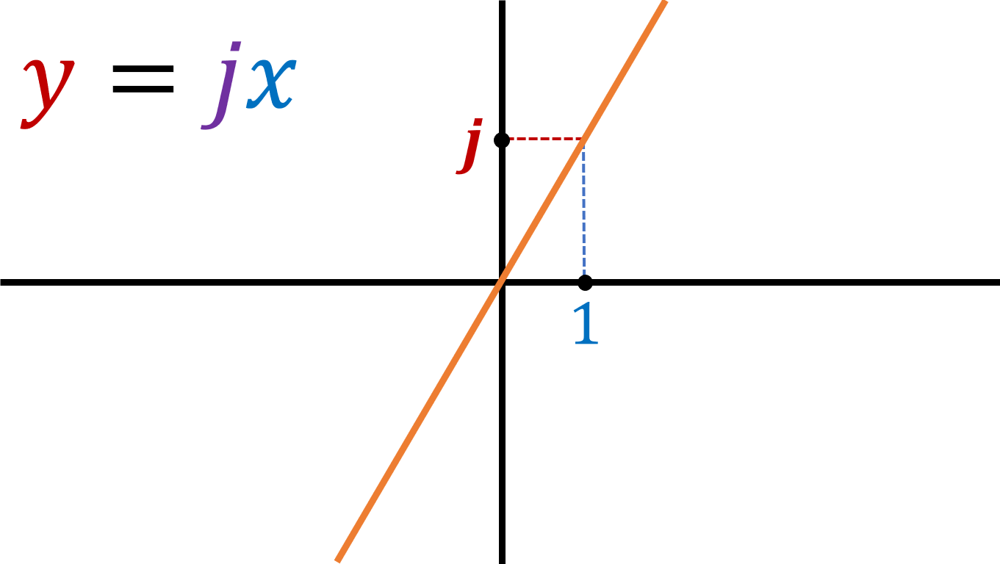
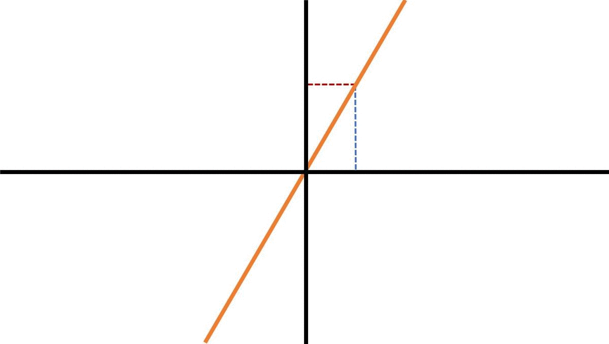

Suppose there is a straight line graph with the gradient j:
We know that when x is 1, y is equal to j. Now lets rotate the line 90 degrees:
When rotating the line 90 degrees, the new line has a y value of 1 when x is -j. Since the equation of a straight line is [y = mx (+ c)], if we input the values of y as 1 and x as -j, we get [m = 1/-j].
Therefore, we have just proved that if a line has a gradient of j, then the gradient of the perpendicular line would be 1/-j.